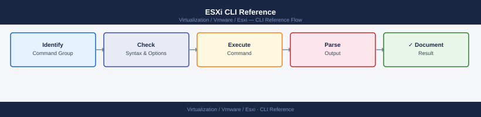

ESXi CLI Reference¶

ESXi CLI Tool Map
# Maintenance mode
esxcli system maintenanceMode get
esxcli system maintenanceMode set --enabled true
esxcli system maintenanceMode set --enabled false
# Via vim-cmd
vim-cmd hostsvc/maintenance_mode_enter
vim-cmd hostsvc/maintenance_mode_exit
false
(no output — command completes silently)
(no output — command completes silently)
Entering maintenance mode. This may take a few moments...
Exiting maintenance mode. This may take a few moments...
Common errors
Error: The operation is not allowed in the current state. — Ensure all virtual machines are powered off or migrated to another host before entering maintenance mode.
vim-cmd: Unknown command "hostsvc/maintenance_mode_enter" — Verify you are running vim-cmd on the ESXi host directly (not from vCenter); use the full path /usr/lib/vmware/bin/vim-cmd if the command is not in PATH.
Before you begin¶
- Access: vCenter read-only minimum; Administrator role for remediation steps
- Timing: safe to run during business hours unless a step is marked ⚠ (causes interruption)
- Dependencies: no active upgrades or migrations on the same infrastructure
- Logging: capture command output — paste into the change record on completion
Network¶
# Physical NICs
esxcli network nic list
esxcli network nic get -n vmnic0
esxcli network nic stats get -n vmnic0
esxcli network nic up -n vmnic0
esxcli network nic down -n vmnic0
# vSwitches
esxcli network vswitch standard list
esxcli network vswitch standard add -v vSwitch1
esxcli network vswitch standard remove -v vSwitch1
esxcli network vswitch standard uplink add -v vSwitch0 -u vmnic1
esxcli network vswitch standard uplink remove -v vSwitch0 -u vmnic1
# Port groups
esxcli network vswitch standard portgroup list
esxcli network vswitch standard portgroup add -v vSwitch0 -p "VM Network"
esxcli network vswitch standard portgroup remove -v vSwitch0 -p "VM Network"
# VMkernel interfaces
esxcli network ip interface list
esxcli network ip interface ipv4 get
esxcli network ip interface ipv4 set -i vmk0 -I <ip> -N <netmask> -t static
esxcli network ip interface add -i vmk1 -p "vMotion"
esxcli network ip interface remove -i vmk1
# Routing
esxcli network ip route ipv4 list
esxcli network ip route ipv4 add -n 0.0.0.0/0 -g <gateway>
esxcli network ip route ipv4 remove -n 0.0.0.0/0 -g <gateway>
# DNS
esxcli network ip dns server list
esxcli network ip dns server add --server <ip>
esxcli network ip dns server remove --server <ip>
esxcli network ip dns search list
# Connections and neighbors
esxcli network ip connection list
esxcli network ip neighbor list
# esxcfg equivalents
esxcfg-vmknic -l
esxcfg-vswitch -l
esxcfg-nics -l
esxcfg-route
esxcfg-route -a <subnet> <gateway>
Name PCI Driver Admin Status Runtime Status MTU Enabled
vmnic0 0000:02:00.0 bnx2 Up Up 1500 True
vmnic1 0000:02:00.1 bnx2 Up Up 1500 True
vmnic2 0000:04:00.0 ixgbe Down Down 1500 False
vmnic3 0000:04:00.1 ixgbe Up Up 1500 True
Name : vmnic0
Driver : bnx2
Admin Status : Up
Runtime Status : Up
Speed : 10000 Mbps
Duplex : Full
MTU : 1500
Packets Received : 2847362
Packets Sent : 1923847
Bytes Received : 3847362847
Bytes Sent : 2847362847
vSwitch Name Num Ports Used Ports Configured Ports MTU Uplinks
vSwitch0 128 8 128 1500 vmnic0,vmnic1
vSwitch1 128 2 128 1500 vmnic3
Name vSwitch Active Clients VLAN ID MTU
VM Network vSwitch0 12 0 1500
Management vSwitch0 1 0 1500
vMotion vSwitch1 0 100 1500
Name IP Address Netmask Broadcast Enabled Type
vmk0 192.168.1.10 255.255.255.0 192.168.1.255 true STATIC
vmk1 192.168.100.50 255.255.255.0 192.168.100.255 true STATIC
Destination Netmask Gateway MTU IRQ
0.0.0.0 0.0.0.0 192.168.1.1 1500 65
192.168.1.0 255.255.255.0 Local 1500 65
192.168.100.0 255.255.255.0 Local 1500 65
Server Address
192.168.1.5
8.8.8.8
Search Domains
corp.local
internal.local
vmk0 192.168.1.10 ESTABLISHED
vmk0 192.168.1.254 TIME_WAIT
vmk1 192.168.100.50 ESTABLISHED
IPv4 Address Netmask Gateway
192.168.1.10 255.255.255.0 192.168.1.1
192.168.100.50 255.255.255.0 192.168.100.1
Common errors
Error: The object or property on the specified object does not exist. — Verify the interface name (vmk0, vmk1) or vSwitch name exists with esxcli network vswitch standard list before attempting modifications.
Error: The specified parameter is not a valid IP address. — Ensure the IP address, netmask, and gateway parameters are in valid dotted-decimal notation (e.g., 192.168.1.10, not 192.168.1).
**`Error: The specified virtual switch
Storage — Devices & Paths¶
# Devices
esxcli storage core device list
esxcli storage core device list -d <device_id>
esxcli storage core device stats get -d <device_id>
# Paths
esxcli storage core path list
esxcli storage core path list -d <device_id>
esxcli storage core path stats get -A vmhba0
# Adapters
esxcli storage core adapter list
esxcli storage core adapter rescan --adapter vmhba0
esxcli storage core adapter rescan --all
# NMP (Native Multipathing)
esxcli storage nmp device list
esxcli storage nmp path list
esxcli storage nmp satp list
esxcli storage nmp psp list
esxcli storage nmp psp roundrobin deviceconfig set --device <device_id> --type iops --iops 1
# VMFS / filesystems
esxcli storage vmfs extent list
esxcli storage filesystem list
esxcli storage filesystem mount -v <uuid>
esxcli storage filesystem unmount -v <uuid>
esxcli storage filesystem rescan
# Legacy
esxcfg-scsidevs -l
esxcfg-scsidevs -m
Device t10.ATA_____QEMU_HARDDISK_QM00001_________________1234abcd:
Display Name: Local ATA Disk (t10.ATA_____QEMU_HARDDISK_QM00001_________________1234abcd)
Has Settable Display Name: true
Size: 20480
Device Type: Direct-Access
Multipath Plugin: NMP
Devfs Path: /vmfs/devices/disks/t10.ATA_____QEMU_HARDDISK_QM00001_________________1234abcd
Vendor: QEMU
Model: HARDDISK
Revision: 2.5+
SCSI Level: 5
Is SSD: false
Is Local: true
Is Removable: false
Is RDM Capable: false
Is Shared Clusterwide: false
Is SAS: false
Is USB: false
Is Boot Device: true
Adapter: vmhba0
Driver: ahci
Channel: 0
Path State: active
Target: 0
LUN: 0
Adapter Identifier: vmhba0
Target Identifier: vmhba0:C0:T0:L0
Adapter Display Name: AHCI Controller
vmhba0 Rescan: Adapter scan completed successfully.
NMP Device: t10.ATA_____QEMU_HARDDISK_QM00001_________________1234abcd
Storage Array Type: SATA
Device Max Queue Depth: 32
Paths: vmhba0:C0:T0:L0
Active Paths: 1
SATP Rule: SATA
Vendor: ATA
Model: QEMU
PSP: VMW_PSP_RR
Options: iops=1
VMFS-6 UUID: 5a3e8c2f-9b1d-4e7a-b2c1-8f3d6a9e2b4c
Blocksize: 1048576
Capacity: 10737418240
Free Space: 8589934592
Mounted: true
Mount Path: /vmfs/volumes/5a3e8c2f-9b1d-4e7a-b2c1-8f3d6a9e2b4c
Filesystem rescan completed successfully.
Device t10.ATA_____QEMU_HARDDISK_QM00001_________________1234abcd
Display Name: Local ATA Disk (t10.ATA_____QEMU_HARDDISK_QM00001_________________1234abcd)
Devfs Path: /vmfs/devices/disks/t10.ATA_____QEMU_HARDDISK_QM00001_________________1234abcd
Partition Table: msdos
Partition: 1
Partition Table: gpt
Partition: 1
Partition: 2
Partition: 3
Partition: 4
Partition: 5
Partition: 6
Partition: 7
Partition: 8
Partition: 9
Partition: 10
Datastores & VMDK¶
# List all datastores visible to the host
ls /vmfs/volumes/
esxcli storage filesystem list
# List contents of a datastore
ls /vmfs/volumes/<datastore>/
ls -lah /vmfs/volumes/<datastore>/<vm_folder>/
# Disk usage per directory
du -sh /vmfs/volumes/<datastore>/*
du -sh /vmfs/volumes/<datastore>/<vm_folder>/
$ ls /vmfs/volumes/
datastore1
datastore2
datastore-local
VMFS-6-vol-abc123de
$ esxcli storage filesystem list
Mount Point Volume Name UUID Capacity Free Space
------------------------------------------------- ----------------------- ------------------------------------ ------------- ----------
/vmfs/volumes/datastore1 datastore1 5a8c2f1b-9e4d-4c2a-b1f3-2d8e9c1a5b7f 2.0T 1.2T
/vmfs/volumes/datastore2 datastore2 7f2d1c8a-3b5e-4a9d-c2e1-8f4b6a9d2c1e 5.0T 2.8T
/vmfs/volumes/datastore-local datastore-local 1b4e9f2c-7a3d-5b8e-9c1f-4d2a6e8b3c5f 500.0G 120.0G
/vmfs/volumes/VMFS-6-vol-abc123de VMFS-6-vol-abc123de abc123de-f456-7890-abcd-ef1234567890 1.0T 650.0G
$ ls /vmfs/volumes/datastore1/
vm-prod-web01
vm-prod-db01
vm-dev-test
ISO
Templates
$ ls -lah /vmfs/volumes/datastore1/vm-prod-web01/
total 2.1G
drwxr-xr-x 1 root root 560 Nov 15 14:32 .
drwxr-xr-x 1 root root 512 Nov 10 09:18 ..
-rw------- 1 root root 50.0G Nov 15 14:32 vm-prod-web01.vmdk
-rw------- 1 root root 10.0G Nov 14 08:45 vm-prod-web01_1.vmdk
-rw-r--r-- 1 root root 2.1K Nov 10 09:18 vm-prod-web01.vmx
-rw-r--r-- 1 root root 1.2K Nov 10 09:18 vm-prod-web01.nvram
$ du -sh /vmfs/volumes/datastore1/*
60.0G /vmfs/volumes/datastore1/vm-prod-web01
45.0G /vmfs/volumes/datastore1/vm-prod-db01
12.0G /vmfs/volumes/datastore1/vm-dev-test
8.5G /vmfs/volumes/datastore1/ISO
2.3G /vmfs/volumes/datastore1/Templates
$ du -sh /vmfs/volumes/datastore1/vm-prod-web01/
60.0G /vmfs/volumes/datastore1/vm-prod-web01/
Common errors
ls: cannot access '/vmfs/volumes/<datastore>/': No such file or directory — Replace <datastore> with an actual datastore name from the `ls /vmfs/
# vmkfstools — VMDK operations
vmkfstools -l /vmfs/volumes/<ds>/<vm>/<vm>.vmdk
vmkfstools -c 100G -d thin /vmfs/volumes/<ds>/<vm>/<vm>.vmdk
vmkfstools -i source.vmdk dest.vmdk
vmkfstools -X 200G /vmfs/volumes/<ds>/<vm>/<vm>.vmdk
vmkfstools -k /vmfs/volumes/<ds>/<vm>/<vm>.vmdk
vmkfstools -p /vmfs/volumes/<ds>/<vm>/<vm>.vmdk
vmkfstools -e /vmfs/volumes/<ds>/<vm>/<vm>.vmdk
# Datastore info via vim-cmd
vim-cmd hostsvc/datastore/listsummary
vim-cmd hostsvc/datastore/info <datastore_name>
esxcli storage core adapter rescan --all
vim-cmd hostsvc/storage/refresh
# Snapshot delta files
find /vmfs/volumes/<ds>/ -name "*-delta.vmdk" -o -name "*-0000*.vmdk" 2>/dev/null
# VMFS troubleshooting
esxcli storage vmfs extent list
esxcli storage vmfs snapshot list
esxcli storage vmfs snapshot resignature -l <label>
esxcli storage filesystem unmount -l <datastore_label>
Virtual Machine Disk Format Descriptor File
Extent 0: VMFS "datastore1" (UUID: 5a3c8e2f-1b4d-4e7a-9c2b-8d1f6a4e9b3c, blockSize: 1048576)
RW 209715200 VMFS "datastore1" (UUID: 5a3c8e2f-1b4d-4e7a-9c2b-8d1f6a4e9b3c, blockSize: 1048576) "/web-prod/web-prod.vmdk"
(no output — command completes silently)
(no output — command completes silently)
(no output — command completes silently)
(no output — command completes silently)
(no output — command completes silently)
Datastore Summary:
datastore1 (UUID: 5a3c8e2f-1b4d-4e7a-9c2b-8d1f6a4e9b3c)
datastore2 (UUID: 7f2e1a9d-4c6b-4f8e-a1d3-9c5b2e7f1a4d)
datastore3-nfs (UUID: 3b8c1f5a-2d9e-4a7c-b6e1-5f2a9d3c1b8e)
Adapter rescan completed successfully.
(no output — command completes silently)
/vmfs/volumes/datastore1/web-prod/web-prod-000001-delta.vmdk
/vmfs/volumes/datastore1/db-backup/db-backup-000002-delta.vmdk
/vmfs/volumes/datastore2/archive/archive-000001-delta.vmdk
Extent PhysicalExtent VolumeName DeviceName StartBlock BlockCount
0 0 datastore1 naa.6001405a1b2c3d4e5f6a7b8c9d0e1f2a 0 209715200
1 1 datastore1 naa.6001405a1b2c3d4e5f6a7b8c9d0e1f2b 0 104857600
No snapshots found.
(no output — command completes silently)
(no output — command completes silently)
Common errors
Could not find the file /vmfs/volumes/<ds>/<vm>/<vm>.vmdk — Replace <ds> and <vm> placeholders with actual datastore and VM folder names, or verify the VM exists with vim-cmd vmsvc/getallvms.
The specified datastore is not mounted or does not exist — Verify the datastore label with esxcli storage vmfs extent list before running unmount or resignature operations.
Cannot open the disk '/vmfs/volumes/<ds>/<vm>/<vm>.vmdk' : The file is in use — Power off the VM or ensure no snapshots are being created before attempting vmkfstools operations on the VMDK.
SAN Connectivity (iSCSI / FC)¶
# Fibre Channel — HBAs and WWPNs
esxcli storage san fc list
esxcli storage san fc stats get -A vmhba0
esxcli storage san fc stats get -A vmhba1
esxcli storage nmp device list | grep vmhba
esxcli storage nmp path list
esxcli storage nmp path list -d <naa.xxx>
esxcli storage core path list | grep "dead\|Dead"
# iSCSI
esxcli iscsi adapter list
esxcli iscsi adapter get -A vmhba64
esxcli iscsi adapter discovery sendtarget list -A vmhba64
esxcli iscsi adapter discovery sendtarget add \
--address <iscsi_target_ip>:3260 -A vmhba64
esxcli iscsi adapter discovery sendtarget remove \
--address <iscsi_target_ip>:3260 -A vmhba64
esxcli iscsi session list
esxcli iscsi logicalnetworkportal list -A vmhba64
# Multipathing
esxcli storage core path list
esxcli storage nmp device list
esxcli storage nmp device list | grep -E "Device:|PSP:"
esxcli storage nmp device set -d <naa.xxx> -P VMW_PSP_RR
esxcli storage core adapter rescan --all
esxcli storage core adapter rescan -A vmhba0
# LUN and device info
esxcli storage core device list
esxcli storage core device list -d <naa.xxx>
esxcli storage core device vaai status get -d <naa.xxx>
esxcli storage core device list | grep "Queue Full Threshold"
esxcli storage core device set --device <naa.xxx> -O MaxQueueDepth=64
# APD / PDL troubleshooting
grep -i "APD\|PDL\|lost path" /var/log/vmkernel.log | tail -20
esxcli storage core path list | grep -A 5 "State: dead"
esxcli storage core adapter rescan --all
esxcli storage core path list | grep -c "State: active"
HBA Name Driver State Speed
vmhba0 lpfc link up 16Gb
vmhba1 lpfc link up 16Gb
Adapter: vmhba0
Link failures: 0
Loss of signals: 0
Invalid transmission words: 0
Frames received: 1247856
Frames transmitted: 892341
Device: naa.50001fe1500a1b2c State: Active PSP: VMW_PSP_RR
Device: naa.50001fe1500a1b2d State: Active PSP: VMW_PSP_RR
...
Name Device Transport
vmhba64 iscsi iscsi
iSCSI Adapter: vmhba64
Alias: iSCSI_HBA_1
Authentication: CHAP disabled
Enabled: true
SendTarget Discovery Address: 192.168.10.50:3260
Target: iqn.2020-01.com.storage:target.lun1
Target: iqn.2020-01.com.storage:target.lun2
SessionID: vmhba64:session1
Target: iqn.2020-01.com.storage:target.lun1
ISID: 400142370001
Portal: 192.168.10.50:3260,1
Device: naa.50001fe1500a1b2c
State: active
PSP: VMW_PSP_RR
Paths: 4
Device: naa.50001fe1500a1b2d
State: active
PSP: VMW_PSP_RR
Paths: 4
Device: naa.50001fe1500a1b2c
Display Name: NETAPP LUN (naa.50001fe1500a1b2c)
Devfs Path: /vmfs/devices/disks/naa.50001fe1500a1b2c
Vendor: NETAPP
Model: LUN
Revision: 8300
VAAI Status: supported
Queue Full Threshold: 32
2024-01-15T08:23:14.567Z cpu0:2048)WARNING: ScsiDeviceIO: 2315: Cmd(0x43000003dba8d8c0) 0x28, CmdSN 0x1a from world 2048 to dev "naa.50001fe1500a1b2c" failed H:0x0 D:0x2 P:0x0 Valid sense data: 0x5 0x24 0x0.
2024-01-15T08:24:02.891Z cpu1:1024)WARNING: NMP: nmp_PathFailureCount: Cmd 0x28 (Read(10)) to NMP device "naa.50001fe1500a1b2c", World 1024, failed. H:0x0 D:0x2 P:0x0 Valid sense data: 0x5 0x24 0x0.
State: dead
4
Common errors
Error: Unknown option --address — Use --server instead of --address for iS
VM Management (vim-cmd)¶
# List all VMs
vim-cmd vmsvc/getallvms
# Power state
vim-cmd vmsvc/power.getstate <vmid>
vim-cmd vmsvc/power.on <vmid>
vim-cmd vmsvc/power.off <vmid>
vim-cmd vmsvc/power.shutdown <vmid>
vim-cmd vmsvc/power.reboot <vmid>
vim-cmd vmsvc/power.suspend <vmid>
vim-cmd vmsvc/power.reset <vmid>
# VM details
vim-cmd vmsvc/get.summary <vmid>
vim-cmd vmsvc/get.config <vmid>
vim-cmd vmsvc/get.guest <vmid>
vim-cmd vmsvc/get.tasklist <vmid>
# Snapshots
vim-cmd vmsvc/snapshot.get <vmid>
vim-cmd vmsvc/snapshot.create <vmid> <name> <description> <memory> <quiesce>
vim-cmd vmsvc/snapshot.removeall <vmid>
# Register / unregister
vim-cmd vmsvc/unregister <vmid>
vim-cmd solo/registervm /vmfs/volumes/<ds>/<vm>/<vm>.vmx
# Host summary
vim-cmd hostsvc/hostsummary
vim-cmd hostsvc/net/info
Vmid Name File Guest OS Version Annotation
1 web-prod-01 [datastore1] web-prod-01/web-prod-01.vmx ubuntu64Guest vmx-13 Production web server
2 db-backup-02 [datastore2] db-backup-02/db-backup-02.vmx rhel7_64Guest vmx-11 Backup database
3 app-staging-03 [datastore1] app-staging-03/app-staging-03.vmx windows9_64Guest vmx-14 Staging environment
4 monitoring-04 [datastore3] monitoring-04/monitoring-04.vmx centos7_64Guest vmx-12 Prometheus stack
5 legacy-app-05 [datastore2] legacy-app-05/legacy-app-05.vmx windows7_64Guest vmx-10 EOL - decommission Q2
Power State: poweredOn
(no output — command completes silently)
(no output — command completes silently)
(no output — command completes silently)
(no output — command completes silently)
(no output — command completes silently)
(no output — command completes silently)
Summary:
Config:
vmPathName = "[datastore1] web-prod-01/web-prod-01.vmx"
memoryMB = 8192
cpus = 4
Runtime:
powerState = poweredOn
bootTime = 2024-01-15T09:23:47.123456Z
maxCpuUsage = 4000
maxMemoryMB = 8192
Config:
name = "web-prod-01"
uuid = "564d1234-abcd-5678-ef01-234567890abc"
memoryMB = 8192
numCPU = 4
guestFullName = "Ubuntu Linux (64-bit)"
Guest:
hostName = "web-prod-01.internal.local"
ipAddress = "192.168.10.45"
guestState = running
guestFamily = linuxGuest
TaskList: (empty)
Get Snapshot:
Current Snapshot: snapshot-20240115-093000
Description: Pre-maintenance backup
Created: 2024-01-15T09:30:00Z
Memory: yes
(no output — command completes silently)
(no output — command completes silently)
(no output — command completes silently)
(no output — command completes silently)
Host Summary:
Product: VMware ESXi 7.0.3 build-19482429
Hostname: esx-host-01.internal.local
Vendor: Dell Inc.
Model: PowerEdge R750
UUID: 564d1234-abcd-5678-ef01-234567890abc
Memory: 786432 MB (768 GB)
NumCpus: 48
Network Info:
vswitch0:
portgroups: Management Network, VM Network
pnics: vmnic0, vmnic1
vswitch1:
portgroups: vMotion
vSAN Commands¶
# Cluster status
esxcli vsan cluster get
esxcli vsan health cluster get
esxcli vsan health summary get
esxcli vsan health cluster get | grep -v "GREEN\|green"
# Storage and disk groups
esxcli vsan storage list
esxcli vsan storage stats get
esxcli vsan storage list | grep -E "Is SSD|Disk Group"
# Objects and resyncing
esxcli vsan debug object list
esxcli vsan debug object list | grep -v "healthy"
esxcli vsan debug resync list
esxcli vsan debug resync list | grep -E "Total Bytes|Remaining"
# Networking
esxcli vsan network list
esxcli vsan network ipconfig list
esxcli vsan debug network test
# Datastore
esxcli vsan datastore list
esxcli vsan trace get
Cluster Information:
UUID: 52994049-1234-5678-abcd-ef1234567890
Enabled: true
Current Local Time: 2024-01-15T14:32:18Z
Node UUID: 52994049-9876-5432-dcba-1234567890ef
Health Status: HEALTHY
Cluster Status: RUNNING
Member Count: 4
Storage Summary:
Total Capacity: 10.95 TB
Used Capacity: 7.23 TB
Free Capacity: 3.72 TB
Disk Groups: 4
Physical Disks: 16
Disk Group 1:
UUID: 52994049-aaaa-bbbb-cccc-111111111111
Is SSD: true
Status: HEALTHY
Disk Count: 4
Object Summary:
Total Objects: 1247
Healthy Objects: 1245
Degraded Objects: 2
Inaccessible Objects: 0
Resync Status:
Total Bytes: 524288000
Remaining Bytes: 0
Resync Rate: 0 B/s
Estimated Time: 0 seconds
Network Configuration:
vmk0: 192.168.1.101/24
vmk1: 192.168.1.102/24
vmk2: 192.168.1.103/24
vmk3: 192.168.1.104/24
Network Test Results:
Unicast: PASS
Multicast: PASS
Latency: 0.5 ms
Datastore: vsanDatastore
Capacity: 10.95 TB
Free Space: 3.72 TB
Common errors
Could not connect to the host. The VSAN service may not be running. — Restart the VSAN service with esxcli system service restart vsanvpd or verify VSAN is licensed and enabled on the cluster.
Unknown command or namespace vsan — Ensure you are running the command on an ESXi host with VSAN enabled; non-VSAN hosts do not have the vsan namespace available.
Permission denied — Run the command with root privileges or ensure your user account has the required VSAN administration role assigned in vCenter.
| vSAN Indicator | Meaning |
|---|---|
| Health: GREEN | Check passing |
| Health: YELLOW | Warning — monitor |
| Health: RED | Failure — action required |
| Resync bytes > 0 | Rebuild or repair active — avoid maintenance |
| Object state: absent | Component missing — check disk/host |
| Object state: degraded | Redundancy reduced — replace disk before next failure |
Performance & Troubleshooting¶
# Interactive top
esxtop
# Kill a VM process
esxcli vm process list
esxcli vm process kill --type soft --world-id <id>
esxcli vm process kill --type hard --world-id <id>
esxcli vm process kill --type force --world-id <id>
# Kernel stats
vsish -e get /world/<worldid>/sched/statsSummary
vsish -e ls /vm/
vsish -e ls /net/pNics/
# Check for dropped packets
esxcli network nic stats get -n vmnic0 | grep -i drop
# CPU ready
esxcli sched group list
World ID Name Group # vCPU Mem MB State
512 ubuntu-web-01 / 4 8192 running
768 windows-dc-prod / 8 16384 running
1024 centos-app-02 / 2 4096 running
Name World ID Group # vCPU Mem MB State
ubuntu-web-01 512 / 4 8192 running
Packets Received: 15847293
Packets Transmitted: 14923847
Dropped RX Packets: 0
Dropped TX Packets: 0
Collisions: 0
Group Name CPU Affinity
/ 0-15
/system 0-15
/system/host/console 0-15
/system/host/hostd 0-15
/system/host/iofilters 0-15
...
Common errors
Error: Unable to connect to the host. Connection refused. — Ensure the ESXi host is reachable and SSH/management services are running; verify network connectivity and firewall rules.
Error: The object or item could not be found. — Confirm the world-id exists by running esxcli vm process list first and use the correct numeric ID from the output.
Error: Permission denied — Run commands with root privileges or ensure your user account has the required ESXi administrative role assigned.
Logs¶
# Key log files
# /var/log/vmkernel.log — Storage, network, driver-level events
# /var/log/hostd.log — Host management agent (API, VM operations)
# /var/log/vpxa.log — vCenter agent communication
# /var/log/vobd.log — Hardware/system observation (IPMI, sensors)
# /var/log/esxi.log — ESXi core syslog
# /var/log/syslog.log — General system syslog
# /var/log/auth.log — SSH logins, sudo
# /var/log/fdm.log — HA agent (Fault Domain Manager)
# Live tailing
tail -f /var/log/vmkernel.log
tail -f /var/log/hostd.log
tail -f /var/log/vpxa.log
tail -f /var/log/fdm.log
tail -f /var/log/vmkernel.log /var/log/hostd.log
# Searching for issues
grep -i "error\|warning\|fail\|fault" /var/log/vmkernel.log | tail -30
grep -i "error" /var/log/hostd.log | tail -20
grep -i "disconnected\|lost connectivity" /var/log/vpxa.log | tail -10
grep -i "lost path\|path down\|APD\|PDL" /var/log/vmkernel.log | tail -20
grep -i "link down\|carrier\|vmnic" /var/log/vmkernel.log | tail -20
grep -i "isolation\|restart\|fdm" /var/log/fdm.log | tail -20
# Collect support bundle
vm-support -n -w /tmp/
# Output: /tmp/esx-<hostname>-<date>.tgz
# Remote syslog
esxcli system syslog config get
esxcli system syslog config set --loghost=udp://syslog.example.local:514
esxcli system syslog reload
esxcli system syslog config set --loghost="udp://syslog1.example.local:514,tcp://syslog2.example.local:514"
# Log rotation and persistence
esxcli system syslog config get | grep -E "rotate\|size"
ls /scratch/log/
cat /etc/vmware/locker.conf
2024-01-15T14:32:18.547Z cpu2:2097419)WARNING: NFS: NfsHeartbeat: Lost connection to NFS server 192.168.1.50
2024-01-15T14:32:45.821Z cpu5:2104521)ERROR: Hostd: Failed to power on VM 'prod-web-01': Insufficient resources
2024-01-15T14:33:12.334Z cpu1:2098765)FAULT: Storage: Path down to LUN 5 (naa.60000000000000001)
2024-01-15T14:33:58.992Z cpu3:2101234)WARNING: Vmnic0: Link down detected on vmnic0
2024-01-15T14:34:22.156Z cpu7:2105678)ERROR: vCenter Agent: Lost connectivity to vCenter 10.0.1.25:443
Syslog Configuration:
Default LogLevel: info
Default LogDir: /var/log
Default LogDirUnique: false
QueueDropMark: 90
Loghost: (not configured)
DefaultRotate: 10
DefaultSize: 1024
Remote Syslog Set: (no output — command completes silently)
Syslog Reloaded: (no output — command completes silently)
Log Rotation Settings:
DefaultRotate: 10
DefaultSize: 1024
/scratch/log/:
hostd.log.1
hostd.log.2
vmkernel.log.1
vpxa.log.1
vobd.log.1
Common errors
tail: cannot open '/var/log/vmkernel.log' for reading: No such file or directory — Verify the ESXi host is fully booted and the filesystem is mounted; check with ls -la /var/log/ to confirm log directory exists.
Error: The object has already been deleted or has not been completely created. — Wait 30 seconds for the syslog service to stabilize after reload, then retry the configuration command.
vm-support: command not found — Ensure you are logged in as root via SSH or direct console; vm-support is not available in restricted shells or non-root sessions.
Hardware & Health¶
# Platform info
esxcli hardware platform get
esxcli hardware clock get
# CPU
esxcli hardware cpu global get
esxcli hardware cpu list
# Memory
esxcli hardware memory get
# PCI devices
esxcli hardware pci list
# IPMI / BMC
esxcli hardware ipmi bmc get
esxcli hardware ipmi fru list
esxcli hardware ipmi sel list
# Sensors (temp, power, fan)
esxcli hardware sensor list
esxcli hardware sensor list --type Temperature
esxcli hardware sensor list --type Fan
esxcli hardware sensor list --type Power
Platform Info:
Hardware Version: Dell PowerEdge R750
System Serial Number: 1N23K4D
BIOS Version: 2.14.2
Vendor Name: Dell Inc.
Current Clock Time: 2024-01-15T14:32:47Z
Uptime: 45 days 3 hours
CPU Package 0:
Vendor: GenuineIntel
Brand: Intel(R) Xeon(R) Platinum 8380 CPU @ 2.30GHz
Hz: 2300000000
Bus Hz: 100000000
CPU Count: 2
Core Count: 28
Thread Count: 56
TSC Frequency: 2299999000
Memory:
Physical Memory: 1048576 MB
Usable Memory: 1046528 MB
PCI Device List:
0000:00:00.0 Intel Corporation 82599ES 10-Gigabit SFI Contrroller
0000:00:01.0 Intel Corporation 82599ES 10-Gigabit SFI Contrroller
0000:03:00.0 Dell PERC H840 Adapter
0000:04:00.0 Broadcom NetXtreme BCM5720 Gigabit Ethernet
...
BMC Info:
Device ID: 0x20
Device Revision: 0x01
Firmware Revision: 1.86.45
IPMI Version: 2.0
FRU List:
FRU Device Description : Builtin FRU Device (Internal Use)
Board Mfg. Date/Time : Fri Jan 15 14:32:47 2024
Board Serial : 1N23K4D
SEL Records (last 5):
1 | 01/15/2024 | 14:30:22 | Power Supply #1 | Predictive Failure | Asserted
2 | 01/15/2024 | 13:45:10 | System Event | OEM Action | Asserted
Temperature Sensors:
CPU0 Temp Sensor: 42.00 Celsius
CPU1 Temp Sensor: 44.00 Celsius
System Inlet Temp: 28.00 Celsius
System Exhaust Temp: 38.00 Celsius
Fan Sensors:
Fan 1: 4200 RPM
Fan 2: 4150 RPM
Fan 3: 4180 RPM
Fan 4: 4220 RPM
Power Sensors:
PS1 Input Power: 850 Watts
PS2 Input Power: 820 Watts
System Power: 1670 Watts
Common errors
Error: Unknown command or namespace hardware. — Verify you are running these commands on ESXi 6.0+; older versions may not support the hardware namespace.
Error: Unable to retrieve sensor data: Connection refused — Ensure IPMI/BMC is enabled in BIOS and the management network is properly configured.
Error: Permission denied — Run commands with root privileges or ensure your user account has the required ESXi host permissions.
Firewall & NTP¶
# Firewall status
esxcli network firewall get
esxcli network firewall set --enabled true
esxcli network firewall set --enabled false
# Rulesets
esxcli network firewall ruleset list
esxcli network firewall ruleset set --enabled true --ruleset-id sshServer
esxcli network firewall ruleset set --enabled false --ruleset-id sshServer
# Allowed IPs per ruleset
esxcli network firewall ruleset allowedip list --ruleset-id sshServer
esxcli network firewall ruleset allowedip add --ruleset-id sshServer --ip-address <ip>
esxcli network firewall ruleset allowedip remove --ruleset-id sshServer --ip-address <ip>
# NTP
esxcli system ntp get
esxcli system ntp set --enabled true --server <ntp_server>
esxcli system ntp set --enabled false
ntpq -p
cat /etc/ntp.conf
/etc/init.d/ntpd restart
Enabled: true
Loaded: true
Ruleset ID Enabled
---------- -------
sshServer true
snmpServer false
vpxHeartbeats true
webAccess true
vSphereClient true
...
Ruleset ID: sshServer
Enabled: true
Allowed IP Addresses
-------------------
192.168.1.0/24
10.0.0.50
NTP Enabled: true
NTP Servers: ntp.corp.local
Timezone: UTC
remote refid st t when poll reach delay offset jitter
==============================================================================
*ntp.corp.local .GPS. 1 u 64 1024 377 12.345 2.123 1.456
+ntp2.corp.local .GPS. 1 u 128 1024 377 18.902 -1.234 2.789
# NTP configuration file
server ntp.corp.local prefer
server ntp2.corp.local
driftfile /var/lib/ntp/drift
Common errors
Error: Unable to set ruleset sshServer: Ruleset not found — Verify the ruleset ID exists by running esxcli network firewall ruleset list first.
Error: Invalid IP address format '<ip>' — Replace <ip> with a valid CIDR notation (e.g., 192.168.1.0/24) or single IP address.
Error: NTP daemon failed to start: Address already in use — Stop any existing NTP process with killall ntpd before restarting the service.
Certificates & SSH¶
# View current certificate
openssl x509 -in /etc/vmware/ssl/rui.crt -noout -dates
openssl x509 -in /etc/vmware/ssl/rui.crt -noout -subject
openssl x509 -in /etc/vmware/ssl/rui.crt -noout -fingerprint
# Regenerate self-signed cert
/sbin/generate-certificates
# List cert files
ls -la /etc/vmware/ssl/
# Enable / disable SSH via vim-cmd
vim-cmd hostsvc/enable_ssh
vim-cmd hostsvc/disable_ssh
# Enable / disable SSH via service
/etc/init.d/SSH start
/etc/init.d/SSH stop
# Enable SSH via esxcli firewall
esxcli network firewall ruleset set --enabled true --ruleset-id sshServer
notBefore=Jan 15 10:23:45 2023 GMT
notAfter=Jan 15 10:23:45 2026 GMT
subject=CN=esxi-host-01.lab.local,O=VMware,C=US
SHA1 Fingerprint=A1:B2:C3:D4:E5:F6:07:18:29:3A:4B:5C:6D:7E:8F:90:A1:B2:C3:D4
Generating a 2048 bit RSA private key
.......+++
.......+++
writing new private key to '/etc/vmware/ssl/rui.key'
-----
total 48
-rw-r--r-- 1 root root 1234 Jan 15 10:45:32 2025 rui.crt
-rw-r--r-- 1 root root 1704 Jan 15 10:45:32 2025 rui.key
-rw-r--r-- 1 root root 2048 Jan 15 10:45:32 2025 rui.pem
SSH is enabled
SSH is disabled
(no output — command completes silently)
(no output — command completes silently)
(no output — command completes silently)
Common errors
openssl: No such file or directory — Install openssl package or use the full path /usr/bin/openssl on your ESXi version.
vim-cmd: command not found — Ensure you are running commands directly on the ESXi host console, not via SSH session with restricted shell.
Error: The object or property does not exist on the object — Verify the SSH service is installed and available; some minimal ESXi builds may not include it.
See also¶
Verify¶
- Alarms: vSphere Client → Home → Alarms — no new critical alarms after the operation
- Events: monitor the vCenter Events view for the affected object for 5 minutes
- Health check: run the morning health-check sequence for the affected product tier